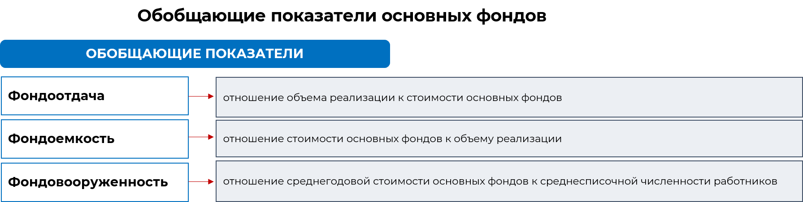

3/10
Производственные и непроизводственные фонды предприятия являются ценными активами, поэтому организации стремятся использовать их более эффективно. Существуют различные показатели, которые помогают оценить степень их использования. Один из таких показателей – стоимостные показатели, которые основаны на денежной стоимости основных средств. Другой показатель – натуральные показатели, которые измеряют использование основных средств в естественных единицах, например, в количестве продукции, произведенной с их помощью. К ним относятся:
1. Фондоотдача
– это показатель, который оценивает, сколько продукции или услуг производится с использованием основных средств. Чем выше фондоотдача, тем эффективнее используются основные средства.
2. Фондоемкость
– это показатель, который оценивает, сколько стоит одна единица объема производства. Чем ниже фондоемкость, тем более эффективно используются основные средства.
3. Фондовооруженность
– это показатель, который оценивает, насколько предприятие обладает основными средствами. Чем выше фондовооруженность, тем больше основных средств имеет предприятие.

Для расчета всех этих показателей используют среднегодовую стоимость основных фондов – это средняя стоимость всех основных средств предприятия за определенный период времени. Она позволяет оценить, сколько основных средств владеет предприятие и насколько эффективно они используются. Стратегическое планирование развития предприятия также требует оценки стоимости основных фондов. Это помогает определить сумму и сроки амортизационных отчислений, которые должны быть осуществлены.
Расчет среднегодовой стоимости основных фондов является важным этапом в этом процессе. Таким образом, оценка использования основных средств и их стоимости играет важную роль в эффективном управлении предприятием. Это позволяет оптимизировать использование основных средств, планировать их развитие и обеспечивать устойчивый рост организации. Для этого произведем расчёт среднегодовой стоимости основных фондов.
Способы определения среднегодовой стоимости основных средств
Рассчитать можно 2 способами в зависимости от того какие показали есть в условиях его определения.
1. Базовая формула среднегодовой стоимости основных фондов (среднеарифметическая). Если высокая точность не играет существенной роли и приоритетом является простота расчета, то, как правило, для определения среднегодовой стоимости основных фондов пользуются следующим базовым алгоритмом:
Базовая формула расчета среднегодовой стоимости ОПФ удобна в применении, но имеет существенный недостаток. Поскольку она не учитывает момент ввода ОФ в эксплуатацию и момент их списания, ее нельзя применять в ситуации, при которой принципиальна высокая точность расчетов.
2. Для подобного случая больше подойдет другая формула, учитывающая динамику поступления и выбытия основных средств:

Пример: Предприятие занимается грузоперевозками. Автомобильный парк предприятия на начало года оценивается в 27 млн. руб. 20 марта был введен в эксплуатацию новый автомобиль стоимостью 700 тыс. руб. 17 октября выбыл автобус стоимостью 300 тыс. руб. Определить среднегодовую стоимость автомобильного парка.
Данный метод расчета характеризуется высокой степенью трудоемкости, однако его преимущество заключается в очень высокой точности полученного результата, так как он позволяет учесть неравномерность использования активов. При использовании данного расчета мы получаем среднегодовую стоимость основных средств, которая также известна как среднегодовая полная учетная стоимость основных фондов.
Пример: Предприятие занимается грузоперевозками. Автомобильный парк предприятия на начало года оценивается в 27 млн. руб. На конец отчетного периода стоимость автопарка снизилась на 13%. до 12,5 млн. руб. За рассматриваемый срок организация получила доход, равный 25 млн. руб. Среднесписочная численность работающих в компании составила 113 чел. Произвести расчет фондоотдачи, фондоемкости и фондовооруженности.